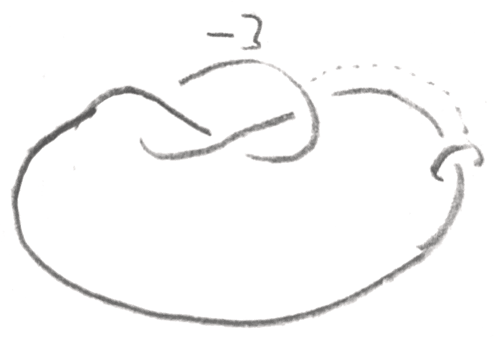

S\(^3\)-pairs and Dehn surgery on knots
Ishan Levy
Abstract
Two general ways are explained to produce pairs of knots \(K,K'\) in \(S^3\) and a \(\gamma \in \QQ \) such that the \(\gamma \) surgery of \(K\) coincides with the \(\pm \gamma \) surgery of \(K'\). They are similar in that the key ingredient in the construction is an \(S^3\)-pair, a pair of framed knots whose surgery yields \(S^3\). They generalize some techniques in the literature, and give plenty of flexibility on choosing both the knots and their framings. Examples are given with a focus on a special case that works for \(0\) surgeries of many ribbon knots.
I would like to thank Prof. Peter Ozsváth for advising me and meeting weekly to talk about this thesis.
Mathematics Department
Princeton University
5/6/2019
One way to produce compact orientable \(3\)-manifolds is to perform Dehn surgery on knots in \(S^3\). Namely, let \(K = S^1 \subset S^3\) be a smoothly embedded knot in \(S^3\), and let \(N(K)\) be a closed tubular neighborhood of \(K\) diffeomorphic to \(S^1 \times D^2\). Then a Dehn surgery of \(K\) is the manifold obtained by removing \(N(K)\) and glueing it back in via some orientation preserving diffeomorphism between the boundary tori. Note that “\(K\)” naturally sits inside the new manifold as well. The diffeomorphism type of the new manifold (with the knot inside it) is only dependant on the image of the meridian of \(N(K)\), which is the circle on the boundary that bounds a disk. The isotopy class of the image depends only on the homology class in \(H_1(T^2)\). A basis for \(H_1(T^2)\) is given by \(\mu \), the oriented meridian of \(K\) and \(l\), the canonical longitude of \(K\) which is the knot characterized by the fact that \(K\) and \(l\) bound an embedded annulus and have linking number \(0\). If the homology class of the image of the meridian is \(p \mu + ql\) we can say that this is a \(\frac p q\) surgery of \(K\). Thus the Dehn surgeries of \(K\) are naturally parameterized by \(\QQ \cup \infty \).
More generally, a framed link in \(S^3\) is a link \(L = K_1 \cup \dots \cup K_n\) with a rational number \(r_i\) associated to each component \(K_i\). By doing \(r_i\) surgery on each \(K_i\), one obtains a manifold called the surgery on the framed link. If the framings are integers, it is called an integer surgery. Integer surgery has an interpretation in terms of handle attachments. If \(S^3 = \partial D^4\), then one can attach a \(2\)-handle to \(D^4\) along a knot \(K\) equipped with a trivialization of its normal bundle in \(S^3\). These trivializations correspond to the integers by looking at the linking number of a constant section with the knot. The resulting \(4\)-manifold after attaching the handle is called the \(n\) trace of the knot (\(n\) the framing), and its boundary is the \(n\) surgery of the knot.
It is a classical theorem proven separately by Lickorish and Wallace in the 1960s that any closed orientable \(3\)-manifold can be produced from surgery on a framed link [Lic62; Wal60]. In fact, the framings can all be made to be \(\pm 1\)! This leads to the question of when surgery on two framed links yields the same \(3\)-manifold. Kirby solved this problem in the 1970s [Kir78] by developing a complete set of moves on framed links that preserve the \(3\)-manifold it represents and can go between any two representations of a \(3\)-manifold as surgery on a framed link.
There are two Kirby moves other than isotopies for integer-framed knots. The first move allows one to add or remove \(\pm 1\)-framed unknots. The second is the more nontrivial one, called sliding a knot \(K_1\) over \(K_2\), defined as follows. Let \(l\) be the longitude of \(K_2\) in \(S^3\) with linking number the framing of \(K_2\). Then along some band connecting \(K_1\) and \(l\), take their connected sum. This allows us to simultaneously orient \(K_1,l\) with an induced orientation from the band giving a well defined linking number \(\lk (K_1,l)\). Finally, replace \(K_1,K_2\) with the connect sum knot and \(K_2\), where the new knot has framing \(r_1+r_2+2\lk (K_1,l)\).
In addition to these two which are for integer framings, there is a third move for converting between rational and integral framed links shown in Figure 1.
There are some important moves that are composites of these basic moves. One is called blowing up/down, which is shown in Figure 2, coming from sliding all the strands through a \(\pm 1\)-framed unknot to separate the unknot, and then removing the unknot. Another composite move is that whenever there is a \(0\)-framed unknot that bounds an embedded disk intersecting some other framed knot in one point, both knots can be removed from the diagram without affecting the \(3\)-manifold. This composite move is called cancelling.
Even though this is a complete set of moves, much is still left to be understood about the relationship between knots and links and their surgeries. One may wonder how much information about \(K\) is retained by the manifold \(S^3_\gamma (K)\), the \(\gamma \) surgery on \(K\), where \(\gamma \in \QQ \) is the framing on \(K\). For example, it isn’t hard to see that the Alexander module can be recovered from the \(0\) surgery of a knot. A conjecture related to knot surgeries is the Property R conjecture, which claims that no nontrivial knot can yield \(S^2\times S^1\) via \(0\) surgery. This was resolved in 1983 with Gabai’s work on foliations [Gab87]. He showed that the zero surgery of a knot detects its Seifert genus, which detects the unknot. Later work showed that the any knot admitting an \(r\) surgery for \(r \in \QQ \) that is orientation preserving diffeomorphic to \(S^3_r(0_1)\) must also be the unknot [Cul+87; GL89; Kro+07].
How special is the unknot in that it is characterized by its surgeries? Let a knot \(K\) be called \(\gamma \)-injective if whenever there is an orientation preserving diffeomorphism between \(S^3_\gamma (K')\) and \(S^3_\gamma (K)\), then \(K = K'\). The result mentioned earlier shows that the unknot is \(\gamma \)-injective for any \(\gamma \), and this is also known to be true for the trefoil, and the figure eight [OS06].
However, these knots are special in that they are small, so it is easier to characterize them in terms of invariants which may be visible in their surgeries. The framing \(\gamma \) matters a lot for uniqueness. It is known for example that any torus knot is determined by its \(0\) surgery [Ter93]. One might expect that as a knot type \(K\) becomes more complicated, it becomes more likely that for some \(\gamma \), \(K\) will not be \(\gamma \)-injective. To provide more evidence toward this, good techniques are required for producing knots sharing surgeries. There has been work by various people producing knots with the same surgeries, for example see [Bra80; Lic76; Oso06; Ter94]. Two examples are particularly notable in that they are general methods that actually produce distinct knots with diffeomorphic \(\gamma \) traces. The first method, called annulus twisting, can be used to produce infinitely many knots with the same \(\gamma \) trace where \(\gamma \in \{-4,0,4\}\) [Abe+12]. It is a somewhat limited technique in the sense that there is not good control over the framing, but it has been refined on the level of \(3\)-manifolds for example in [Abe+14] to work in a bit more generality. The second method originates from the idea of dual patterns due to Gompf and Miyazaki [GM95], and can be used to produce pairs of knots with the same \(0\) trace.
Here two methods are presented that generalize both annulus twisting and the dual patterns construction by relaxing the diffeomorphism to one on the surgery rather than the trace. These give much more flexibility on both the type of knots for which the methods work, and the framings for which the knots produced will share a surgery. Both methods use the same fundamental ingredient, called an \(S^3\)-pair. Afterwards, nontrivial examples are given, and some special attention is given to a common special case of both constructions that works for many ribbon knots. The first method works without modification for integer-framed knots in an integer homology \(3\)-sphere, and the latter for rationally-framed knots in any compact \(3\)-manifold, but here only \(S^3\) is considered.
Suppose \(L\) is a framed link in \(S^3\) consisting of two knots \(A,B\) with framings \(f_a,f_b \in \ZZ \) represent \(S^3\). This data, denoted either \(L\) or \((A,B)\), is called an \(S^3\)-pair. Given an \(S^3\)-pair \(L\), a knot \(K\) is said to have an \(L\)-band presentation if it is obtained by connecting \(A\) and \(B\) with a band. Given a \(L\)-band presented knot \(K\), one can orient \(A\) and \(B\) (up to reversing them both) by having the orientation be compatible with the band. Then the linking matrix \(\begin{pmatrix} f_a & l_{ab} \\ l_{ab} & f_b \end{pmatrix}\) of \(L\) with this \(S^3\)-pair is well-defined.
There are many different types of \(S^3\)-pairs. A basic example comes from \(A,B\) being a cancelling pair of handles (represented by any integer-framed knot and its \(0\)-framed meridian). This example gives every knot \(K\) some sort of band presentation, such as the one shown in Figure 3.
More generally, any crossing change of a knot \(K\) to \(K'\) and an integer \(n\) gives \(K\) a band presentation. This can be seen in Figure 4. Namely, the crossing change can be viewed as connecting \(K'\) to a meridian of \(K\). If one then views that meridian as a cancelling \(1\)-handle for \(K'\) which is \(n\)-framed, this is a band presentation of \(K\). \(\gamma \) in this case is \(n \pm 2\), and \(\ee = 1\) so there is a lot of freedom over which surgery will be shared by the resulting knot.
Another family of examples shown in Figure 5 called \(B^K_n\) comes from the following lemma, which will be useful in the proof of the main theorem.
Lemma 2.1. Let \(L\) be a framed link in \(S^3\), and let \(A,B\) be knots \(K,K'\) with framings \(n\) and \(n+2\) such that \(A,B\) bound an annulus disjoint from \(L\) and such that if one orients \(A\) and \(B\) with respect to an orientation on the annulus, their linking number is \(-(n+1)\). Then \(L\) and \(L \cup A \cup B\) represent the same 3-manifold.
Proof. Given the conditions in the theorem, \(A\) specifies \(B\) up to isotopy as a longitude. Start with \(L\), and add \(A\) with a cancelling \(1\)-handle, which will not change the \(3\)-manifold. On the level of \(3\)-manifolds, this is the same as adding \(A\) with a \(0\)-framed meridian \(\mu \). Then choose an orientation of \(\mu \) and \(A\) such that the linking number between the two is \(1\), and let \(D_\mu \) be the embedded disk with boundary \(\mu \) that geometrically intersects \(A\) once. Now let \(B\) be the knot obtained by sliding \(\mu \) over \(A\) if \(\ee = 1\) and \(-A\) if \(\ee = -1\) along the band whose core is on \(D\) such that \(A \cup B\) bound an annulus. The sliding is all local, so the annulus will be disjoint from the rest of \(L\). This will also result in the desired framings. □
Given a band presentation of a knot \(K\) with \(S^3\)-pairs \(L=(A,B)\), call the sum of the entries in the linking matrix the induced framing, denoted \(\gamma = f_a + f_b + 2l_{ab}\). For a \(B^K_n\)-band presented knot, the induced framing is either \(4n+4\) or \(0\) depending on the orientation of the band. One can then produce two knots \(L_a(K),L_b(K)\) which we will later see share a surgery with \(K\).
Construction 2.1.1 (Band twisting). Let \(K\) be a knot with an \(L\)-band presentation. Let \(A', B'\) be longitudes of \(A\) and \(B\) respectively corresponding to framings \(f_a + 1\) and \(f_b - 1\), and give them the framings \(f_a,f_b\) respectively. Connect \(A\) and \(B\) along the band that produces \(K\), to obtain \(K\) along with two framed knots \(A',B'\). Since \(A \cup B\) represents \(S^3\), \(K\) in the framed link \(K \cup A' \cup B'\) will represent another (possibly different) knot type in \(S^3\), which will be denoted \(L_a(K)\). By reversing the roles of \(A,B\), one also obtains \(L_b(K)\).
The main theorem about band twisting is below: the resulting knot has a surgery that agrees with the \(\gamma \) surgery of \(K\).
Theorem 2.2. Let \(K\) be a knot with an \(L\)-band presentation, and let \(\ee = l_{ab}^2-f_af_b\) be the negative of the determinant of the linking matrix. Then \(S^3_{\ee \gamma }(L_a(K)) \cong S^3_{\ee \gamma }(L_b(K)) \cong S^3_{\gamma } (K)\).
Proof. By reversing the roles of \(A,B\), it suffices to show that \(S^3_{\ee \gamma }(L_a(K)) \cong S^3_{\gamma } (K)\). The proof will be done via handle calculus, and is shown schematically in Figure 6. Begin with a \(\gamma \)-framed oriented \(K\), built by attaching a band to \(A\) and \(B\). First, by Lemma 2.1, one can add to the diagram \(f_a\) and \(f_a+2\)-framed oriented longitudes of \(A\) named \(A'\) and \(B''\) respectively, such that the linking numbers between any pair of \(A,A',B''\) are \(f_a+1\). Since \(K\) is the union of \(A\) and \(B\) along a band, \(\lk (K,B'') = \lk (A,B'') + \lk (B,B'') = l_{ab} + f_a+1\).
Now slide \(B''\) over \(-K\) along a band obtained as a subset of the natural annulus with boundary \(A \cup B''\), and denote the resulting knot \(B'\) (this annulus is disjoint from \(A'\)). By using the rest of the annulus and the band connecting \(A\) and \(B\), an isotopy is produced between \(-B'\) and a longitude of \(B\). It’s framing is going to be \(\gamma + 2\lk (-K,B'') + f_a + 2 = f_a + f_b + 2l_{ab} -2(l_{ab} + f_a + 1) + f_a + 2 = f_b\). Moreover, \(\lk (-B',B) = -\lk (B',B) = \lk (B',A)-\lk (B',K) = -l_{ab} - \lk (B'',K) + \gamma \) \(= -l_{ab} - (l_{ab} + f_a+1) + f_a+ f_b + 2l_{ab} = f_b -1\).
Thus some integer surgery \(\gamma '\) of \(L_a(K)\) agrees with the \(\gamma \) surgery of \(K\), and for homological reasons \(\gamma ' = \pm \gamma \). One can compute \(\gamma '\) in the following way: since \(A' \cup B'\) represent \(S^3\), \(L_a(K)\) is a knot in \(S^3\) that can be isotoped inside any small neighborhood. Choosing a neighborhood that is outside of \(A'\cup B'\), one gets an isotopy corresponding to a series of handle slides that splits \(L_a(K)\) from \(\gamma '\), and the goal is to compute the framing on \(L_a(K)\) after that isotopy. In order to do this, one only needs to know how many times it was slid over \(A',B'\). But after the isotopy, the linking number of \(L_a(K)\) with \(A',B'\) is \(0\), and this is a linear constraint that determines how many times \(L_a(K)\) needs to be slid.
Both the number of slides and the amount each slide affects the framing are polynomial functions, so \(\frac{\gamma '}\gamma \) is a rational function in the variables \(f_a, f_b,\) and \(l_{ab}\) on the variety cut out by \(f_a f_b-l_{ab}^2 = \pm 1\). The integer points are Zariski dense on the open set that the rational function is defined \((\gamma \neq 0)\), and their image via \(g\) is \(\pm 1\), so the whole variety’s image is \(\pm 1\). The variety has two components, the determinant \(\pm 1\) parts, and so the function is constant on each component. By computing\(\frac{\gamma '}\gamma \) for any two examples with \(\pm 1\) determinants such as when the linking matrix is \(\begin{pmatrix} 1 & 0 \\ 0 & 1\end{pmatrix}\) and \(\begin{pmatrix} 1 & 0 \\ 0 & -1\end{pmatrix}\), one sees that \(\frac{\gamma '}\gamma \) is the function \(\ee \). □


In this section it will be more convenient to use the \((A,B)\) notation for \(S^3\)-pairs. The second construction, called dualizing, works given a framed link \(Q\) and two disjoint (rationally) framed knots \(K_1,K_2\) such that \(Q \cup K_i, i = 1,2\) yield \(S^3\) upon surgery. Let us call \((Q,K_1,K_2)\) a dualizing triple. The key observation is the lemma below:
Lemma 3.1. Given a dualizing triple \((Q,K_1,K_2)\), \(K_1\), viewed inside the \(S^3\) produced from surgery on \(Q \cup K_2\), has the same surgery as \(K_2\) viewed inside the \(S^3\) produced from surgery on \(Q \cup K_1\).
Proof. Both of their surgeries are the \(3\)-manifold produced by surgery on \(Q \cup K_1 \cup K_2\). □
Thus given a dualizing triple, the lemma provides a way to produce two (possibly different) knots sharing a surgery. Here is a construction for producing dualizing triples.
Construction 3.1.1 (Dualizing). Let \(K_1\cup Q\) be a framed link representing \(S^3\), and let \(K_2\) be a framed knot disjoint to \(K_1\) isotopic in \(S^3(Q)\) to \(K_1\). Then \((Q,K_1,K_2)\) form a dualizing triple.
Indeed because \(K_1\) is isotopic to \(K_2\) in \(S^3(Q)\), surgery on \(Q \cup K_2\) is diffeomorphic to surgery on \(Q \cup K_1\) which is diffeomorphic to \(S^3\) by assumption. What may be surprising is that this construction can produce many nontrivial examples, as will be shown in the next section.
Two dualizing triples \((Q,K_1,K_2), (Q',K_1',K_2')\) are equivalent if there are orientation preserving diffeomorphisms between the surgeries of \(Q,Q'\) sending \(K_1\cup K_2\) to \(K_1' \cup K_2'\) as framed knots. Equivalent dualizing triples produce the same pairs of knots sharing a surgery.
Lemma 3.2. Every dualizing triple \((Q,K_1,K_2)\) where \(K_1\) has an integer framing is equivalent to a triple \((Q',K'_1,K'_2)\) where \(Q'\) has only one component and an integer framing.
Proof. Surgery on \(Q\) is diffeomorphic to surgery on the \(Q \cup K_1 \cup \mu \), where \(\mu \) is the meridian of \(K_1\) with a \(0\)-framing, since it cancels with \(K_1\). But since \(K_1 \cup L\) yields \(S^3\), \(\mu \) can be viewed in the surgered manifold as a knot \(\mu '\) in \(S^3\) with an integer framing, and its surgery will be the same as \(Q\)’s. If \(\phi \) is this diffeomorphism between the surgeries, and \(K_1,K_2\) are viewed as knots in the surgery of \(Q\), then \((Q,K_1,K_2)\) is equivalent to \((\mu ',\phi (K_1),\phi (K_2))\). □
Thus the dualizing construction for integer framings really amounts to taking an \(S^3\)-pair \((K,K_1)\), and isotoping \(K_1\) in the surgery of \(K\) to obtain \(K_2\) and the dualizing triple \((K,K_1,K_2)\).
The reason this method is called dualizing is that it is analogous to [GM95] mentioned earlier, where a notion of duality is developed of certain patterns by looking at knots in \(S^2\times S^1\). Their notion of duality can essentially be obtained from this one by taking \(Q\) to be the dual circle of a \(1\)-handle attached to \(S^3\), and taking each \(K_i\) to be a cancelling \(2\)-handle. Rather than looking at surgeries of \(K_1,K_2\), however, they consider \(K_i\) as a knot inside \(S^3(Q)-K_{3-i} \cong S^1\times B^2\) for \(i = 1,2\), which up to conventions on how the diffeomorphisms to \(S^1\times B^2\) are made are a pair of dual patterns. Here there is a duality associated to any \(S^3\)-pair \((K_1,K_2)\) defined for knots in \(S^3(K_2)-K_1\) that is are isotopic in \(S^3(K_2)\) to \(K_1\). This construction was originally used to produce potential counterexamples to the slice-ribbon conjecture, but later was used to construct examples of knots that give the same \(0\) trace/surgery [Oso06; MP18].
In this section examples are given of using band twisting and dualizing to produce knots sharing surgeries.
Consider the family of \(S^3\)-pairs \(B^K_n\) mentioned earlier. If \(K\) is the unknot \(0_1\), and \(n\) is \(2\) or \(-2\), then the notion of band presentation agrees with that in [Abe+12]. Moreover the band twisting construction presented above coincides in this case with annulus twisting presented there. Annulus twisting produces infinitely many knots sharing a surgery, and it can be generalized via \(A^n := B^{0_1}_n\), shown in Figure 7. Namely, \(A^n_a(K)\) for any \(A^n\)-band presented knot inherits a natural \(A^n\)-presentation from that on \(K\) by using the same band. Thus the process can be applied many times to a \(A^n\)-band presented knot \(P\) to obtain an integer-indexed family of knots \(P_r\) with \(A^n(P_r) = P_{r+1}\).
Consider the case \(n = -1, K = 0_1\). Here the induced framing is \(0\), and giving a \(A^{-1}\)-band presented knot is the same as giving a ribbon presentation of a knot with two minima. The knot is produced by taking a two component unlink and attaching a band between the two components. The band twisting operation is given by applying \(1\) surgery on a canonical longitude of one of the unknotted components, and \(-1\) surgery on a canonical longitude of the other. The factor that seems to determine whether or not a different knot can be produced is the geometric intersection number of the core of the band with the disjoint disks that each of the unknots bound. If the geometric intersection number is \(1\), then the band twist does not change the knot type, as the two knots on which \(1\) and \(-1\) surgery are being performed are isotopic in the complement of the knot with linking number \(0\), so by Lemma 2.1 do not change the knot.
When the geometric intersection number is larger than \(1\), actually distinct knots can be produced. For example shown in Figure 9 is an \(A^{-1}\)-band presentation of the knot \(8_8\), and the result of one band twist, which gives a distinct knot sharing the \(0\) surgery. In Figure 8 is a table giving invariants of the knots produced from applying this construction to other ribbon knots. If \(P\) is a \(A^n\)-band presented knot, let \(P_r\) be as above the result of \(r\) twists. Some questions that arise are:
Question 4.0.1. Let \(\gamma \) be a finite type invariant of order \(l\). Is the function that takes an integer \(r\) to \(\gamma (P_r)\) always a polynomial of degree at most \(l-2\)?
Question 4.0.2. In the \(n = -1\) case, if the geometric intersection number of the band is at least \(2\) with one of the disjoint disks that \(A\) and \(B\) bound, do \(P_r\) represent infinitely many knot types?
Moreover, a general (though imprecise) question about band twisting is:
Question 4.0.3. Given an \(S^3\)-pair \(L\), for any \(L\)-band presented knot \(K\) with a sufficiently complicated (?) band, is \(L_a(K)\) not the same as \(K\)?
| Knot | V3 | V4 | V5 | V6 | |
| \(8_8(-3)\) | \( 6 \) | \(-1094.5 \) | \( 1092.5 \) | \( -15583.85\) | |
| \(8_8(-2) \) | \(6 \) | \(-494.5 \) | \(492.5 \) | \(-3733.85\) | |
| \(8_8(-1) \) | \(6 \) | \(-134.5 \) | \(132.5\) | \( -463.85\) | |
| \(8_8\) | \( 6 \) | \(-14.5 \) | \(12.5 \) | \(-13.85\) | |
| \(8_8(1) \) | \(6 \) | \(-134.5 \) | \(132.5 \) | \(-463.85\) | |
| \(8_8(2) \) | \(6 \) | \(-494.5 \) | \(492.5 \) | \(-3733.85\) | |
| Deg | \(0 \) | \(2 \) | \(2 \) | \(4\) | |
| \(10_{153}(-4)\) | \( -246 \) | \(-2186 \) | \(-12872.5 \) | \(-57441.7\) | |
| \(10_{153}(-3) \) | \(-186 \) | \(-1286 \) | \(-5937.5 \) | \(-20916.7\) | |
| \(10_{153}(-2) \) | \(-126 \) | \(-626 \) | \(-2122.5\) | \( -5571.7\) | |
| \(10_{153}(-1) \) | \(-66 \) | \(-206\) | \( -467.5 \) | \(-846.7\) | |
| \(10_{153}(0) \) | \(-6 \) | \(-26\) | \( -12.5 \) | \(-21.7\) | |
| \(10_{153}(1)\) | \( 54 \) | \(-86\) | \( 202.5 \) | \(-216.7\) | |
| \(10_{153}(2)\) | \( 114 \) | \(-386\) | \( 1137.5 \) | \(-2391.7\) | |
| \(10_{153}(3)\) | \( 174 \) | \(-926\) | \( 3752.5 \) | \(-11346.7\) | |
| \(10_{153}(4)\) | \( 234 \) | \(-1706\) | \( 9007.5\) | \( -35721.7\) | |
| Deg | \(1\) | \( 2\) | \( 3 \) | \(4\) | |
| \(8_9(-4) \) | \(0 \) | \(1931.5 \) | \(0\) | \( 44647.85\) | |
| \(8_9(-3) \) | \(0 \) | \(1091.5 \) | \(0 \) | \(15037.85\) | |
| \(8_9(-2) \) | \(0 \) | \(491.5 \) | \(0\) | \( 3487.85\) | |
| \(8_9(-1) \) | \(0 \) | \(131.5 \) | \(0 \) | \(397.85\) | |
| \(8_9 \) | \( 0 \) | \(11.5 \) | \(0\) | \( 7.85\) | |
| \(8_9(1) \) | \(0 \) | \(131.5\) | \(0 \) | \(397.85\) | |
| \(8_9(2) \) | \(0 \) | \(491.5\) | \( 0 \) | \(3487.85\) | |
| \(8_9(3) \) | \(0 \) | \(1091.5 \) | \(0 \) | \(15037.85\) | |
| \(8_9(4) \) | \(0 \) | \(1931.5\) | \( 0\) | \( 44647.85\) | |
| Deg | \(-1 \) | \(2\) | \( -1\) | \( 4\) | |
As another example, here is an explicit diffeomorphism between \(2\) surgery and \(-2\) surgeries of some other ribbon knots. In the example shown in Figure 10, the \(2\) surgery of \(K_s\) agrees with the \(-2\) surgery of \(K_{s-3}\). To see this, one can view use the \(S^3\)-pair \(L\) consisting of a two component unlink with both components having framing \(1\). Thus the induced framing is \(2\) and \(\ee \) is \(-1\), and one finds \(L_a(K_s) = L_b(K_s) = K_{s-3}\). The knots can be distinguished by the fact that the quadratic term of the Conway polynomial changes sign between the cases \(s\) is odd and even. This example includes many small knots such as \(K_{-5} = 10_{140}, K_{-2} = 6_1, K_{-1} = 3_1 \# \bar{3_1}, K_{1} = 8_{20}, K_2 = 9_{46}\), and furthermore note that \(\bar K_{s} = K_{-s-2}\).


For dualizing, nontrivial examples have been used and produced in [Oso06; MP18]. In fact, one of the first published examples of distinct knots sharing surgeries due to Lickorish [Lic76] is a special of the construction in the degenerate case that for the \(S^3\)-pair is a split link, and one of the framed knots in the \(S^3\)-pair represents \(S^3\). In this case, the other knot must also represent \(S^3\), and hence be a \(\frac 1 n\)-framed unknot for some \(n \in \ZZ -0\).
Moreover, the examples from before of band twisting on the \(B_{-1}^{0_1}\)-presented knots can be viewed as an example of dualizing. Begin with the \(S^3\)-pair consisting of \(1\)-framed knot and a \(0\)-framed meridian. Slide the meridian over the \(K,K_1\), and then slide the \(-1\)-framed unknot over the \(1\)-framed unknot to obtain a ribbon knot \(K_2\) (indeed, the two disjoint disks that the unknots bound with the band form a ribbon disk). Applying the dualizing construction to \((K,K_1,K_2)\) yields a band twist, as demonstrated in Figure 11.
Finally shown in Figure 12 is another example produced from a more complicated \(S^3\)-pair, a \(-3\)-framed left handed trefoil, and a \(0\)-framed meridian. The two knots can be distinguished by their Alexander polynomial, and share a \(-8\) surgery.

Similarly to band twisting, one might expect the following (imprecise) question to be true of dualizing:
Question 4.0.4. Given an \(S^3\)-pair \(L\), for any sufficiently complicated (?) isotopy of one of the components, does dualizing yield a distinct pair of knots?
I pledge my honor that this thesis is in accordance with university policy.
Tetsuya Abe et al. Annulus twist and diffeomorphic 4-manifolds. 2012. arXiv: 1209.0361 [math.GT].
Tetsuya Abe et al. Infinitely many knots admitting the same integer surgery and a 4-dimensional extension. 2014. arXiv: 1409.4851 [math.GT].
W. R. Brakes. “Manifolds with multiple knot-surgery descriptions”. In: Mathematical Proceedings of the Cambridge Philosophical Society 87 (1980).
Marc Culler et al. “Dehn surgery on knots”. In: Annals of Mathematics 125.2 (1987), pp. 237–300.
David Gabai. “Foliations and the topology of 3-manifolds”. In: Journal of Differential Geometry 26 (1987), pp. 479–536.
R. Gompf and K Miyazaki. “Some well-disguised ribbon knots”. In: Topology and its Applications 64.2 (1995), pp. 117–131.
Cameron Gordon and John Luecke. “Knots are determined by their complements”. In: Bull. Amer. Math. Soc. 20.1 (1989), pp. 83–87.
Robion Kirby. “A Calculus for framed links in S3”. In: Inventiones mathematicae 45 (1978), pp. 36–56.
Peter Kronheimer et al. “Monopoles and Lens space surgeries”. In: Annals of Mathematics 165 (2007), pp. 457–546.
W. B. R. Lickorish. “A Representation of Orientable Combinatorial 3-Manfiolds”. In: Annals of Mathematics 76.3 (1962).
W. B. R. Lickorish. “Surgery on Knots”. In: Proceedings of the American Mathematical Society 60 (1976).
Allison N. Miller and Lisa Piccirillo. “Knot traces and concordance”. In: Journal of Topology 11.1 (2018), 201–220. issn: 1753-8416. doi: 10.1112/topo.12054. url: http://dx.doi.org/10.1112/topo.12054.
J. K. Osoinach. “Manifolds obtained by surgery on an infinite number of knots in S3”. In: Topology 45.3 (2006), pp. 725–733.
Peter Ozsvath and Zoltan Szabo. The Dehn surgery characterization of the trefoil and the figure eight knot. 2006. arXiv: math/0604079 [math.GT].
Masakazu Teragaito. “Roll-spun knots”. In: Mathematical Proceedings of the Cambridge Philosophical Society 113.1 (1993), pp. 91–96.
Masakazu Teragaito. “Homology handles with multiple knot-surgery descriptions”. In: Topology and its Applications 56 (1994), pp. 249–257.
A. H. Wallace. “Modifications and Cobounding Manifolds”. In: Canadian Journal of Mathematics 12 (1960).